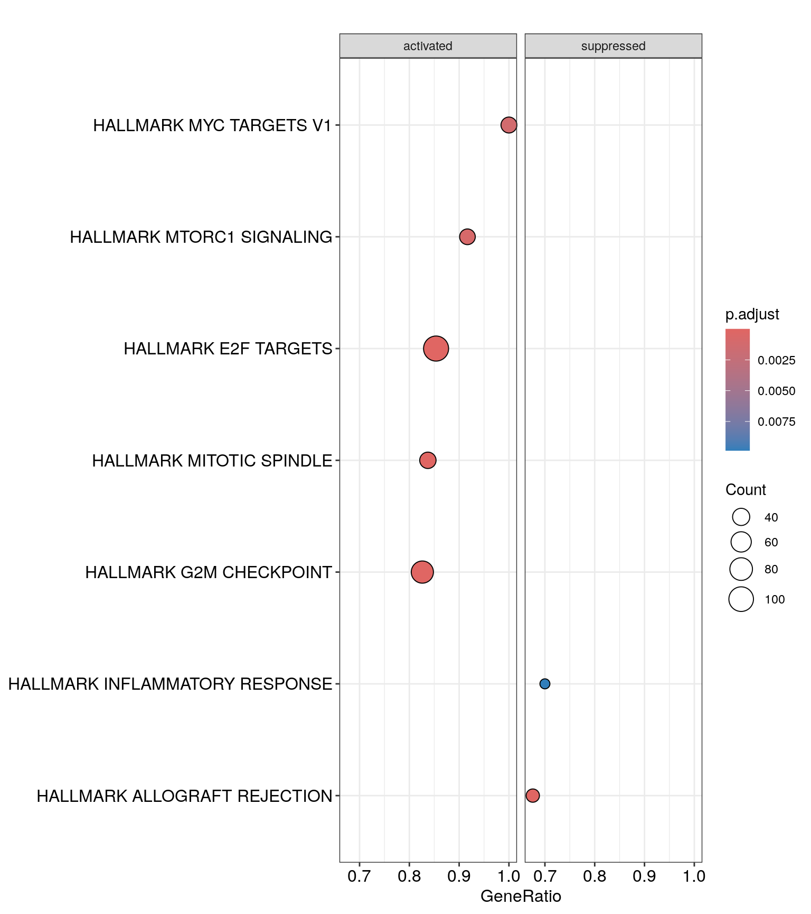
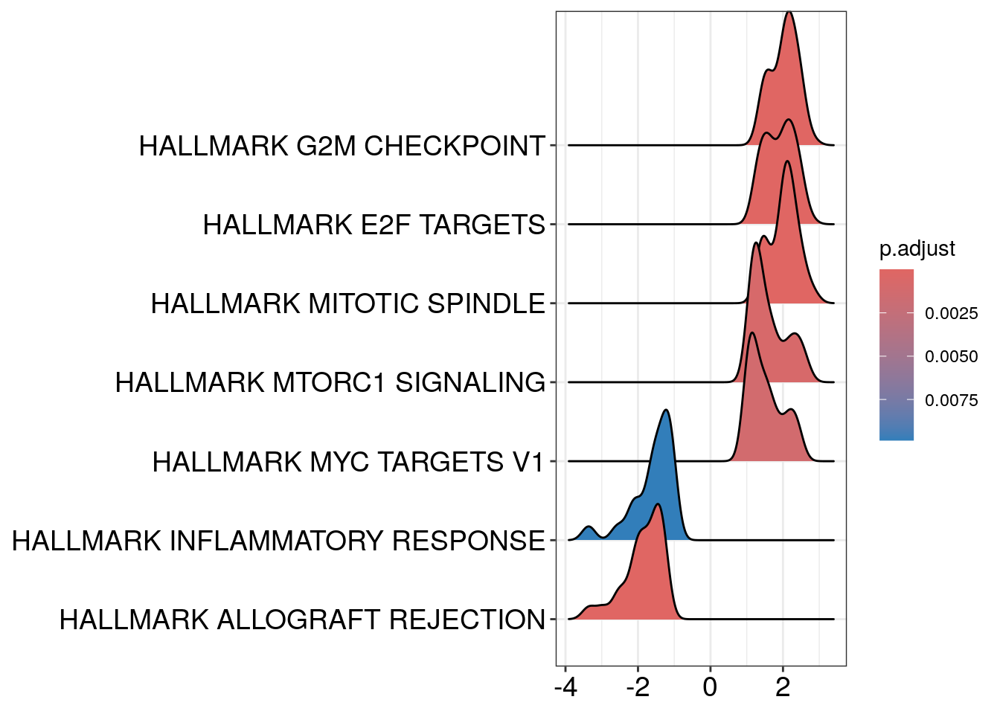
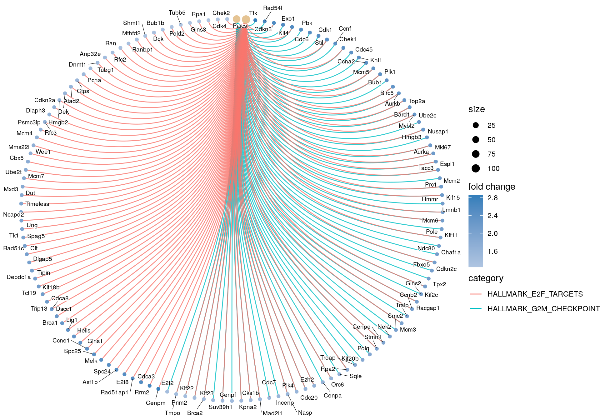
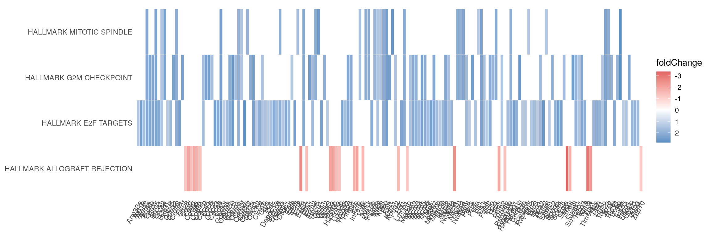

RNA-Seq Tertiary Analysis: Part 4
Bharat Mishra, Ph.D., Austyn Trull, Lara Ianov, Ph.D.
Packages loaded globally
# Set the seed so our results are reproducible:
set.seed(2020)
# Required packages
# pathway analysis
library(clusterProfiler)
library(msigdbr)
# We will need them for data handling
library(magrittr)
library(ggrepel)
library(dplyr)
library(tidyverse)
library(readr)
# plotting
library(ggplot2)
library(EnhancedVolcano)
library(ComplexUpset)
library(ComplexHeatmap)
library(RColorBrewer)Gene Set Enrichment Analysis (GSEA)
Gene Set Enrichment Analysis (GSEA) is a computational method used to determine whether a priori defined sets of genes (representing biological pathways or processes) show statistically significant, concordant differences between two biological states (e.g., phenotypes, experimental conditions).
GSEA is a powerful tool for extracting biological insights from gene expression data. By focusing on gene sets rather than individual genes, it can reveal subtle patterns and coordinated changes in gene expression that might be missed by other methods.
In most cases, gene sets are from public databases where huge efforts from scientific curators have already been made to carefully categorize genes into gene sets with clear biological meanings. Nevertheless, gene sets can also be self-defined from individual studies, such as a set of genes in a network module from a co-expression network analysis, or a set of genes that are up-regulated in a certain disease.
There are three key elements of the GSEA method:
- Calculation of an Enrichment Score (ES)
- Estimation of Significance Level of ES
- Adjustment for Multiple Hypothesis Testing
GSEA and GO enrichment analysis differences
Gene Ontology (GO) Enrichment Analysis
Focus: Identifies which biological processes, molecular functions, or cellular components are over-represented in a set of genes compared to what would be expected by chance.
Input: A list of genes, often differentially expressed genes from an experiment.
Methodology: Uses statistical tests to compare the frequency of GO terms associated with the gene list to their frequency in a background set (e.g., expressed genes).
Outcome: A list of enriched GO terms with their associated p-values, indicating the processes/functions most relevant to the gene list.
Strengths: Simple to understand and implement, useful for identifying broad biological themes.
Limitations: Does not consider the magnitude of changes in gene expression, treats all genes in the list equally.
Gene Set Enrichment Analysis (GSEA)
Focus: Determines whether a priori defined sets of genes (representing biological pathways or processes) show statistically significant, concordant differences between two biological states (e.g., phenotypes, experimental conditions).
Input: A list of genes ranked by their expression level (or other relevant metric), along with a collection of gene sets (e.g., from the Molecular Signatures Database).
Methodology: Calculates an enrichment score for each gene set based on how the genes in the set are distributed across the ranked list.
Outcome: A ranked list of gene sets with their enrichment scores and p-values, indicating which pathways/processes are most differentially regulated between the two states.
Strengths: Takes into account the magnitude of changes in gene expression, can detect subtle but coordinated changes in gene sets.
Limitations: Requires a priori defined gene sets, can be computationally intensive.
Input DEG list
Transplant_vs_Naive_annotated <- read.csv(file = "./results/Transplant_vs_Naive/Transplant_vs_Naive_annotated_DEGlist.csv",
row.names = 1)GSEA can be executed on the full dataset regardless of cutoff.
GSEA on the Full Dataset: Instead of
pre-filtering genes based on a statistical significance threshold (e.g.,
adjusted p-value, fold change), GSEA can be
applied to the entire ranked list of genes. The ranking is usually based
on the magnitude and direction of change between the two conditions
being compared. The advantages for this approach is increased
sensitivity, reduced bias, and exploration of weaker signals. However,
it has some challenges including interpretation of results and
statistical significance of enrichment scores which can be more complex
when using the full dataset.
GSEA on DEGs (Differential Expression Genes): In this approach, only genes that meet a pre-defined cutoff for differential expression are included in the ranked list. The advantages for this approach is focus on strong signals and reduced noise. However this approach has some disadvantages including potential loss of information and dependence on arbitrary cutoffs which can significantly influence the results. Since there’s no universally accepted standard for selecting a cutoff value to define DEGs, this decision is heavily linked to the analyst best judgement (however, we suggest the use of adjusted p-values and an absolute fold change cutoff).
Choosing an appropriate approach
The decision of whether to use the full dataset or a subset of DEGs depends on the specific research question and the characteristics of the dataset.
If you’re interested in exploring subtle or coordinated changes in gene expression, or if you have a large dataset with many genes that show small but potentially meaningful changes, GSEA on the full dataset might be a better choice.
If you want to focus on the most pronounced changes in gene expression or have a smaller dataset, GSEA on DEGs could be more appropriate.
For the purposes of this workshop, we will execute GSEA using the
significant DEGs defined by
padj <= 0.05, log2FoldChange <= -1 | log2FoldChange >= 1
to be consistent with GO analysis cutoff.
Transplant_vs_Naive_annotated_DEGs <- Transplant_vs_Naive_annotated %>%
dplyr::filter(str_trim(external_gene_name) != "") %>% # Remove empty strings
dplyr::filter(padj <= 0.05, log2FoldChange <= -1 | log2FoldChange >= 1) %>% # THIS IS FILTERED ANALYSIS
dplyr::arrange(dplyr::desc(abs(log2FoldChange))) %>%
# Filter out the duplicated rows using `dplyr::distinct()`
dplyr::distinct(external_gene_name, .keep_all = TRUE)Quick look at #of DEGs.
nrow(Transplant_vs_Naive_annotated_DEGs)## [1] 1179Check for duplicated gene_ids
any(duplicated(Transplant_vs_Naive_annotated_DEGs$external_gene_name))## [1] FALSECreate log2Fold change ranked vector
lfc_vector <- Transplant_vs_Naive_annotated_DEGs$log2FoldChange
names(lfc_vector) <- Transplant_vs_Naive_annotated_DEGs$external_gene_name
lfc_vector <- sort(lfc_vector, decreasing = TRUE)
head(lfc_vector)## Gm37206 Gm54471 Saa3 Gm12537 Gm29247 H2-Ea
## 8.279647 7.607093 6.821312 5.829520 5.792019 5.462933Get the gene_sets from MSigDB
MSigDB gene sets
The Molecular Signatures Database (MSigDB) is a meticulously curated
collection of gene sets, initially created as a supplement to the
groundbreaking Gene Set Enrichment Analysis (GSEA) paper. Since its
inception in 2005 with just two collections and 843 gene sets, MSigDB
has evolved independently into a powerful resource, boasting over 30,000
gene sets across nine distinct collections in its latest version
(v2023.1.Hs).
MSigDB organizes its gene sets into several collections, each
dedicated to a specific biological theme. Some collections are further
subdivided for more refined analysis. While there are various ways to
access MSigDB gene sets, the msigdbr package offers a
convenient solution, supporting numerous organisms through ortholog
mapping.
Let’s check which organisms are supported and which gene sets collections it provides.
msigdbr_species()## # A tibble: 20 × 2
## species_name species_common_name
## <chr> <chr>
## 1 Anolis carolinensis Carolina anole, green anole
## 2 Bos taurus bovine, cattle, cow, dairy cow, domestic cat…
## 3 Caenorhabditis elegans <NA>
## 4 Canis lupus familiaris dog, dogs
## 5 Danio rerio leopard danio, zebra danio, zebra fish, zebr…
## 6 Drosophila melanogaster fruit fly
## 7 Equus caballus domestic horse, equine, horse
## 8 Felis catus cat, cats, domestic cat
## 9 Gallus gallus bantam, chicken, chickens, Gallus domesticus
## 10 Homo sapiens human
## 11 Macaca mulatta rhesus macaque, rhesus macaques, Rhesus monk…
## 12 Monodelphis domestica gray short-tailed opossum
## 13 Mus musculus house mouse, mouse
## 14 Ornithorhynchus anatinus duck-billed platypus, duckbill platypus, pla…
## 15 Pan troglodytes chimpanzee
## 16 Rattus norvegicus brown rat, Norway rat, rat, rats
## 17 Saccharomyces cerevisiae baker's yeast, brewer's yeast, S. cerevisiae
## 18 Schizosaccharomyces pombe 972h- <NA>
## 19 Sus scrofa pig, pigs, swine, wild boar
## 20 Xenopus tropicalis tropical clawed frog, western clawed frogLook different gene set (gs) collections
msigdbr_collections()## # A tibble: 23 × 3
## gs_cat gs_subcat num_genesets
## <chr> <chr> <int>
## 1 C1 "" 299
## 2 C2 "CGP" 3384
## 3 C2 "CP" 29
## 4 C2 "CP:BIOCARTA" 292
## 5 C2 "CP:KEGG" 186
## 6 C2 "CP:PID" 196
## 7 C2 "CP:REACTOME" 1615
## 8 C2 "CP:WIKIPATHWAYS" 664
## 9 C3 "MIR:MIRDB" 2377
## 10 C3 "MIR:MIR_Legacy" 221
## # ℹ 13 more rowsThe first column in the above output is the primary category of gene sets. Some gene sets collections may have sub-collections, and they are shown in the second column.
get Hallmark gene set
The Hallmark gene set represent well-defined biological states or processes and exhibit coherent expression patterns. Hallmark gene sets are designed to be concise summaries of specific biological processes, reducing noise and redundancy often found in larger gene sets. These gene sets are derived by aggregating multiple gene sets from other MSigDB collections and retaining genes that consistently show coordinated expression across various datasets. This rigorous selection process ensures high confidence in their biological relevance. Hallmark gene sets cover a wide range of biological processes, making them suitable for exploring diverse research questions in GSEA.
The function we will use to retrieve gene set is the
msigdbr which takes as input the the following main
parameters:
msigdbr(species, category, subcategory)As an example we will use the H category:
mm_hallmark_sets <- msigdbr(
species = "Mus musculus", # Replace with species name relevant to your data
category = "H"
)
head(mm_hallmark_sets)## # A tibble: 6 × 18
## gs_cat gs_subcat gs_name gene_symbol entrez_gene ensembl_gene
## <chr> <chr> <chr> <chr> <int> <chr>
## 1 H "" HALLMARK_ADIPOGENESIS Abca1 11303 ENSMUSG0000001…
## 2 H "" HALLMARK_ADIPOGENESIS Abcb8 74610 ENSMUSG0000002…
## 3 H "" HALLMARK_ADIPOGENESIS Acaa2 52538 ENSMUSG0000003…
## 4 H "" HALLMARK_ADIPOGENESIS Acadl 11363 ENSMUSG0000002…
## 5 H "" HALLMARK_ADIPOGENESIS Acadm 11364 ENSMUSG0000006…
## 6 H "" HALLMARK_ADIPOGENESIS Acads 11409 ENSMUSG0000002…
## # ℹ 12 more variables: human_gene_symbol <chr>, human_entrez_gene <int>,
## # human_ensembl_gene <chr>, gs_id <chr>, gs_pmid <chr>, gs_geoid <chr>,
## # gs_exact_source <chr>, gs_url <chr>, gs_description <chr>, taxon_id <int>,
## # ortholog_sources <chr>, num_ortholog_sources <dbl>Run GSEA
Type ?GSEA to explore the parameters of GSEA. You can
change the parameters for the arguments based on your preference and
supported values/methods.
# Run GSEA
gsea_enrichment <- GSEA(
geneList = lfc_vector,
minGSSize = 25, # minimum gene set
maxGSSize = 500, # maximum gene set
pvalueCutoff = 0.05,
eps = 1e-10, # default
seed = TRUE,
pAdjustMethod = "BH", # change the pAdjustMethod as needed
TERM2GENE = dplyr::select(
mm_hallmark_sets,
gs_name,
gene_symbol)
)## preparing geneSet collections...## GSEA analysis...## leading edge analysis...## done...Explore GSEA results
# see head excluding the last collumn for simplicity:
head(gsea_enrichment@result)[,1:(ncol(gsea_enrichment@result)-1)]## ID
## HALLMARK_G2M_CHECKPOINT HALLMARK_G2M_CHECKPOINT
## HALLMARK_E2F_TARGETS HALLMARK_E2F_TARGETS
## HALLMARK_MITOTIC_SPINDLE HALLMARK_MITOTIC_SPINDLE
## HALLMARK_ALLOGRAFT_REJECTION HALLMARK_ALLOGRAFT_REJECTION
## HALLMARK_MTORC1_SIGNALING HALLMARK_MTORC1_SIGNALING
## HALLMARK_MYC_TARGETS_V1 HALLMARK_MYC_TARGETS_V1
## Description setSize
## HALLMARK_G2M_CHECKPOINT HALLMARK_G2M_CHECKPOINT 92
## HALLMARK_E2F_TARGETS HALLMARK_E2F_TARGETS 123
## HALLMARK_MITOTIC_SPINDLE HALLMARK_MITOTIC_SPINDLE 43
## HALLMARK_ALLOGRAFT_REJECTION HALLMARK_ALLOGRAFT_REJECTION 37
## HALLMARK_MTORC1_SIGNALING HALLMARK_MTORC1_SIGNALING 36
## HALLMARK_MYC_TARGETS_V1 HALLMARK_MYC_TARGETS_V1 34
## enrichmentScore NES pvalue
## HALLMARK_G2M_CHECKPOINT 0.5867916 3.843762 1.000000e-10
## HALLMARK_E2F_TARGETS 0.5335361 3.677769 1.000000e-10
## HALLMARK_MITOTIC_SPINDLE 0.5551506 2.904041 1.653069e-08
## HALLMARK_ALLOGRAFT_REJECTION -0.4614127 -2.694386 6.317781e-06
## HALLMARK_MTORC1_SIGNALING 0.4304638 2.143866 5.807292e-04
## HALLMARK_MYC_TARGETS_V1 0.4340611 2.120300 1.078202e-03
## p.adjust qvalue rank
## HALLMARK_G2M_CHECKPOINT 4.000000e-10 5.263158e-11 412
## HALLMARK_E2F_TARGETS 4.000000e-10 5.263158e-11 501
## HALLMARK_MITOTIC_SPINDLE 4.408185e-08 5.800243e-09 430
## HALLMARK_ALLOGRAFT_REJECTION 1.263556e-05 1.662574e-06 291
## HALLMARK_MTORC1_SIGNALING 9.291667e-04 1.222588e-04 612
## HALLMARK_MYC_TARGETS_V1 1.437603e-03 1.891582e-04 682
## leading_edge
## HALLMARK_G2M_CHECKPOINT tags=83%, list=35%, signal=58%
## HALLMARK_E2F_TARGETS tags=85%, list=42%, signal=55%
## HALLMARK_MITOTIC_SPINDLE tags=84%, list=36%, signal=55%
## HALLMARK_ALLOGRAFT_REJECTION tags=68%, list=25%, signal=53%
## HALLMARK_MTORC1_SIGNALING tags=92%, list=52%, signal=45%
## HALLMARK_MYC_TARGETS_V1 tags=100%, list=58%, signal=43%Dot plot
dotplot(gsea_enrichment, showCategory=20)Challenge: Split the dot plot by activated/suppressed
Click here for solution
dotplot(gsea_enrichment, showCategory=20, split=".sign") + facet_grid(.~.sign)
Ridge Plot
ridgeplot(gsea_enrichment,
showCategory = 10,
fill = "p.adjust",
core_enrichment = TRUE,
label_format = 30,
orderBy = "NES",
decreasing = FALSE)## Picking joint bandwidth of 0.182
Additional plots
cnetplot(gsea_enrichment,
showCategory = 2,
foldChange=lfc_vector,
colorEdge = TRUE,
cex_category = 1,
cex_gene = 1,
cex_label_category = 0.5,
cex_label_gene = 0.5,
circular = FALSE)
Challenge: make the circular network
Click here for solution
cnetplot(gsea_enrichment,
showCategory = 2,
foldChange=lfc_vector,
colorEdge = TRUE,
cex_category = 0.5,
cex_gene = 0.5,
cex_label_category = 0.5,
cex_label_gene = 0.5,
circular = TRUE)
Note: if you would like to display specific
hallmakrs in the cnetplot, note that the
showCategory parameter also accepts a vector of terms to be
displayed.
Most Positive NES
gsea_result_df <- data.frame(gsea_enrichment@result)
gsea_result_df %>%
# This returns the 3 rows with the largest NES values
dplyr::slice_max(NES, n = 3)## ID Description
## HALLMARK_G2M_CHECKPOINT HALLMARK_G2M_CHECKPOINT HALLMARK_G2M_CHECKPOINT
## HALLMARK_E2F_TARGETS HALLMARK_E2F_TARGETS HALLMARK_E2F_TARGETS
## HALLMARK_MITOTIC_SPINDLE HALLMARK_MITOTIC_SPINDLE HALLMARK_MITOTIC_SPINDLE
## setSize enrichmentScore NES pvalue
## HALLMARK_G2M_CHECKPOINT 92 0.5867916 3.843762 1.000000e-10
## HALLMARK_E2F_TARGETS 123 0.5335361 3.677769 1.000000e-10
## HALLMARK_MITOTIC_SPINDLE 43 0.5551506 2.904041 1.653069e-08
## p.adjust qvalue rank
## HALLMARK_G2M_CHECKPOINT 4.000000e-10 5.263158e-11 412
## HALLMARK_E2F_TARGETS 4.000000e-10 5.263158e-11 501
## HALLMARK_MITOTIC_SPINDLE 4.408185e-08 5.800243e-09 430
## leading_edge
## HALLMARK_G2M_CHECKPOINT tags=83%, list=35%, signal=58%
## HALLMARK_E2F_TARGETS tags=85%, list=42%, signal=55%
## HALLMARK_MITOTIC_SPINDLE tags=84%, list=36%, signal=55%
## core_enrichment
## HALLMARK_G2M_CHECKPOINT Ttk/Rad54l/Cdkn3/Exo1/Kif4/Cdc6/Pbk/Stil/Cdk1/Ccnf/Chek1/Cdc45/Knl1/Ccna2/Mcm5/Plk1/Bub1/Birc5/Aurkb/Top2a/Bard1/Mybl2/Ube2c/Hmgb3/Nusap1/Aurka/Mki67/Tacc3/Espl1/Prc1/Mcm2/Hmmr/Kif15/Lmnb1/Mcm6/Kif11/Pole/Chaf1a/Ndc80/Cdkn2c/Fbxo5/Tpx2/Kif2c/Gins2/Racgap1/Ccnb2/Traip/Mcm3/Smc2/Nek2/Cenpe/Stmn1/Polq/Kif20b/Troap/Rpa2/Sqle/Orc6/Cenpa/Ezh2/Cdc20/Plk4/Nasp/Incenp/Cdc7/Mad2l1/Cks1b/Kpna2/Cenpf/Suv39h1/Kif23/Brca2/Prim2/Kif22/Tmpo/E2f2
## HALLMARK_E2F_TARGETS Cenpm/Rrm2/Cdkn3/Kif4/Cdca3/Rad51ap1/E2f8/Asf1b/Spc24/Cdk1/Melk/Spc25/Chek1/Ccne1/Mcm5/Plk1/Gins1/Hells/Birc5/Aurkb/Top2a/Lig1/Brca1/Bard1/Mybl2/Dscc1/Hmgb3/Aurka/Mki67/Tacc3/Espl1/Cdca8/Trip13/Mcm2/Hmmr/Kif18b/Tcf19/Lmnb1/Mcm6/Pole/Cdkn2c/Kif2c/Tipin/Depdc1a/Dlgap5/Cit/Racgap1/Rad51c/Ccnb2/Spag5/Mcm3/Tk1/Ung/Cenpe/Ncapd2/Stmn1/Timeless/Mxd3/Dut/Ube2t/Mcm7/Cbx5/Rpa2/Mms22l/Wee1/Mcm4/Psmc3ip/Rfc3/Orc6/Diaph3/Cdkn2a/Ezh2/Cdc20/Hmgb2/Plk4/Dek/Atad2/Nasp/Mad2l1/Ctps/Cks1b/Kpna2/Pcna/Tubg1/Dnmt1/Suv39h1/Brca2/Prim2/Anp32e/Kif22/Tmpo/Rfc2/Ran/Ranbp1/Mthfd2/Shmt1/Dck/Bub1b/Pold2/Tubb5/Gins3/Rpa1/Cdk4/Chek2/Paics
## HALLMARK_MITOTIC_SPINDLE Ttk/Kntc1/Kif4/Fscn1/Cdk1/Plk1/Bub1/Birc5/Top2a/Nusap1/Aurka/Espl1/Prc1/Kif15/Lmnb1/Kif11/Ndc80/Fbxo5/Tpx2/Kif2c/Dlgap5/Racgap1/Ccnb2/Nek2/Cenpe/Cep72/Kif20b/Ect2/Incenp/Cenpf/Kif23/Brca2/Kif22/Rapgef5/Sass6/Pif1most_positive_nes_plot <- enrichplot::gseaplot(
gsea_enrichment,
geneSetID = "HALLMARK_G2M_CHECKPOINT",
title = "HALLMARK_G2M_CHECKPOINT",
color.line = "#0d76ff"
)
most_positive_nes_plotMost Negative NES
gsea_result_df %>%
# This returns the 3 rows with the largest NES values
dplyr::slice_min(NES, n = 3)## ID
## HALLMARK_ALLOGRAFT_REJECTION HALLMARK_ALLOGRAFT_REJECTION
## HALLMARK_INFLAMMATORY_RESPONSE HALLMARK_INFLAMMATORY_RESPONSE
## HALLMARK_MYC_TARGETS_V1 HALLMARK_MYC_TARGETS_V1
## Description setSize
## HALLMARK_ALLOGRAFT_REJECTION HALLMARK_ALLOGRAFT_REJECTION 37
## HALLMARK_INFLAMMATORY_RESPONSE HALLMARK_INFLAMMATORY_RESPONSE 30
## HALLMARK_MYC_TARGETS_V1 HALLMARK_MYC_TARGETS_V1 34
## enrichmentScore NES pvalue
## HALLMARK_ALLOGRAFT_REJECTION -0.4614127 -2.694386 6.317781e-06
## HALLMARK_INFLAMMATORY_RESPONSE -0.3417413 -1.861534 7.967521e-03
## HALLMARK_MYC_TARGETS_V1 0.4340611 2.120300 1.078202e-03
## p.adjust qvalue rank
## HALLMARK_ALLOGRAFT_REJECTION 1.263556e-05 1.662574e-06 291
## HALLMARK_INFLAMMATORY_RESPONSE 9.105738e-03 1.198123e-03 448
## HALLMARK_MYC_TARGETS_V1 1.437603e-03 1.891582e-04 682
## leading_edge
## HALLMARK_ALLOGRAFT_REJECTION tags=68%, list=25%, signal=53%
## HALLMARK_INFLAMMATORY_RESPONSE tags=70%, list=38%, signal=45%
## HALLMARK_MYC_TARGETS_V1 tags=100%, list=58%, signal=43%
## core_enrichment
## HALLMARK_ALLOGRAFT_REJECTION Zap70/Ltb/Cd28/Cd8b1/Prkcb/H2-Ob/Cd3g/Lck/Ets1/H2-DMa/Itk/Il1b/Stat4/Cd8a/Cd79a/Prf1/Cd3d/Gzmb/Gzma/Il2rb/Thy1/Ncr1/Ereg/Tgfb2/Stab1
## HALLMARK_INFLAMMATORY_RESPONSE Il18r1/Fpr1/Calcrl/Ccrl2/Ptafr/Sgms2/Cd69/Cd55/Kcna3/Cd14/Lck/Scarf1/Btg2/Csf3r/Abca1/Il1b/Gabbr1/Il2rb/Rasgrp1/Ereg/Stab1
## HALLMARK_MYC_TARGETS_V1 Cdc45/Ccna2/Mcm5/Tyms/Rrm1/Mcm2/Mcm6/Rfc4/Dut/Mcm7/Mcm4/Cdc20/Dek/Mad2l1/Ctps/Kpna2/Pcna/Ran/Ranbp1/Pold2/Cbx3/Cdk4/Tfdp1/Lsm2/Usp1/Hnrnpd/Odc1/Eif1ax/Erh/Hnrnpa1/Pgk1/Cdk2/Kpnb1/Pole3most_negative_nes_plot <- enrichplot::gseaplot(
gsea_enrichment,
geneSetID = "HALLMARK_ALLOGRAFT_REJECTION",
title = "HALLMARK_ALLOGRAFT_REJECTION",
color.line = "#0d76ff"
)
most_negative_nes_plotHeatmap
heatplot(gsea_enrichment, showCategory = 4, foldChange=lfc_vector)
Write GSEA results to csv
write.csv(gsea_enrichment@result, file = "./results/Transplant_vs_Naive/Transplant_vs_Naive_GSEA_hallmark_padj_fc.csv")session info
sessionInfo()## R version 4.3.3 (2024-02-29)
## Platform: aarch64-apple-darwin20 (64-bit)
## Running under: macOS Sonoma 14.2.1
##
## Matrix products: default
## BLAS: /Library/Frameworks/R.framework/Versions/4.3-arm64/Resources/lib/libRblas.0.dylib
## LAPACK: /Library/Frameworks/R.framework/Versions/4.3-arm64/Resources/lib/libRlapack.dylib; LAPACK version 3.11.0
##
## locale:
## [1] en_US.UTF-8/en_US.UTF-8/en_US.UTF-8/C/en_US.UTF-8/en_US.UTF-8
##
## time zone: America/Chicago
## tzcode source: internal
##
## attached base packages:
## [1] grid stats graphics grDevices utils datasets methods
## [8] base
##
## other attached packages:
## [1] RColorBrewer_1.1-3 ComplexHeatmap_2.18.0 ComplexUpset_1.3.3
## [4] EnhancedVolcano_1.20.0 lubridate_1.9.3 forcats_1.0.0
## [7] stringr_1.5.1 purrr_1.0.2 readr_2.1.5
## [10] tidyr_1.3.1 tibble_3.2.1 tidyverse_2.0.0
## [13] dplyr_1.1.4 ggrepel_0.9.5 ggplot2_3.5.1
## [16] magrittr_2.0.3 msigdbr_7.5.1 clusterProfiler_4.10.1
##
## loaded via a namespace (and not attached):
## [1] shape_1.4.6.1 rstudioapi_0.16.0 jsonlite_1.8.8
## [4] farver_2.1.2 rmarkdown_2.27 GlobalOptions_0.1.2
## [7] fs_1.6.4 zlibbioc_1.48.2 vctrs_0.6.5
## [10] memoise_2.0.1 RCurl_1.98-1.14 ggtree_3.10.1
## [13] htmltools_0.5.8.1 gridGraphics_0.5-1 sass_0.4.9
## [16] bslib_0.7.0 plyr_1.8.9 cachem_1.1.0
## [19] igraph_2.0.3 iterators_1.0.14 lifecycle_1.0.4
## [22] pkgconfig_2.0.3 Matrix_1.6-5 R6_2.5.1
## [25] fastmap_1.2.0 gson_0.1.0 clue_0.3-65
## [28] GenomeInfoDbData_1.2.11 digest_0.6.36 aplot_0.2.3
## [31] enrichplot_1.22.0 ggnewscale_0.4.10 colorspace_2.1-0
## [34] patchwork_1.2.0 AnnotationDbi_1.64.1 S4Vectors_0.40.2
## [37] RSQLite_2.3.7 labeling_0.4.3 fansi_1.0.6
## [40] timechange_0.3.0 httr_1.4.7 polyclip_1.10-6
## [43] compiler_4.3.3 bit64_4.0.5 withr_3.0.0
## [46] doParallel_1.0.17 BiocParallel_1.36.0 viridis_0.6.5
## [49] DBI_1.2.3 highr_0.11 ggforce_0.4.2
## [52] MASS_7.3-60.0.1 rjson_0.2.21 HDO.db_0.99.1
## [55] tools_4.3.3 ape_5.8 scatterpie_0.2.3
## [58] glue_1.7.0 nlme_3.1-165 GOSemSim_2.28.1
## [61] shadowtext_0.1.3 cluster_2.1.6 reshape2_1.4.4
## [64] fgsea_1.28.0 generics_0.1.3 gtable_0.3.5
## [67] tzdb_0.4.0 data.table_1.15.4 hms_1.1.3
## [70] tidygraph_1.3.1 utf8_1.2.4 XVector_0.42.0
## [73] BiocGenerics_0.48.1 foreach_1.5.2 pillar_1.9.0
## [76] yulab.utils_0.1.4 babelgene_22.9 circlize_0.4.16
## [79] splines_4.3.3 tweenr_2.0.3 treeio_1.26.0
## [82] lattice_0.22-6 bit_4.0.5 tidyselect_1.2.1
## [85] GO.db_3.18.0 Biostrings_2.70.3 knitr_1.47
## [88] gridExtra_2.3 IRanges_2.36.0 stats4_4.3.3
## [91] xfun_0.45 graphlayouts_1.1.1 Biobase_2.62.0
## [94] matrixStats_1.3.0 stringi_1.8.4 lazyeval_0.2.2
## [97] ggfun_0.1.5 yaml_2.3.8 evaluate_0.24.0
## [100] codetools_0.2-20 ggraph_2.2.1 qvalue_2.34.0
## [103] ggplotify_0.1.2 cli_3.6.3 munsell_0.5.1
## [106] jquerylib_0.1.4 Rcpp_1.0.12 GenomeInfoDb_1.38.8
## [109] png_0.1-8 parallel_4.3.3 blob_1.2.4
## [112] DOSE_3.28.2 bitops_1.0-7 viridisLite_0.4.2
## [115] tidytree_0.4.6 ggridges_0.5.6 scales_1.3.0
## [118] crayon_1.5.3 GetoptLong_1.0.5 rlang_1.1.4
## [121] cowplot_1.1.3 fastmatch_1.1-4 KEGGREST_1.42.0